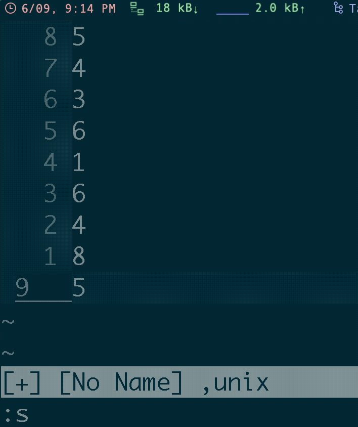
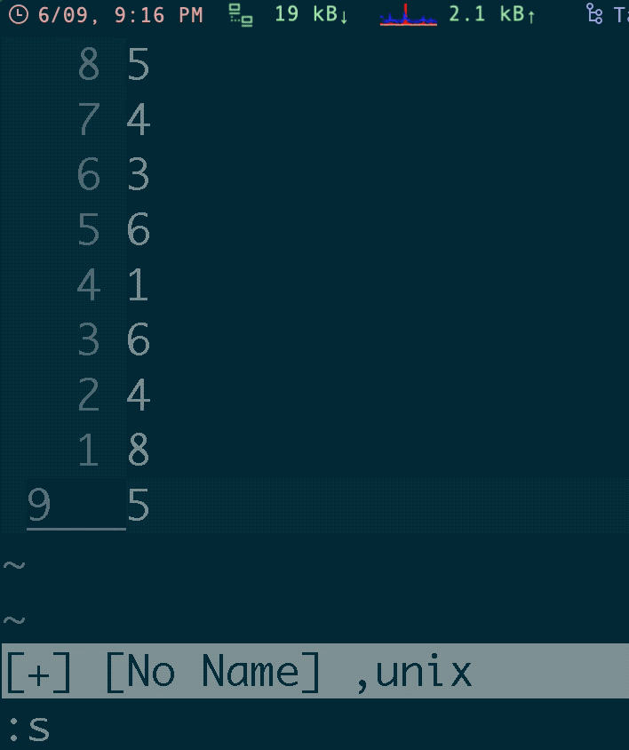
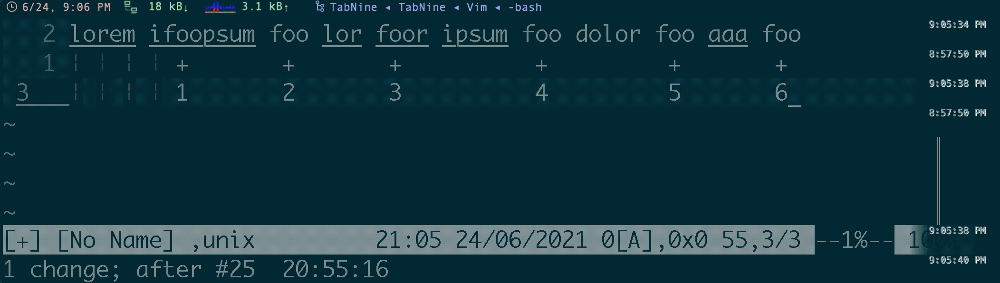
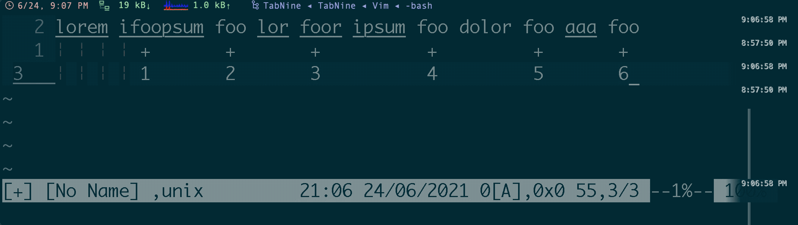
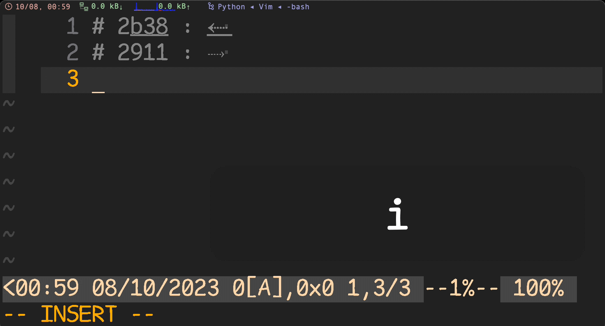
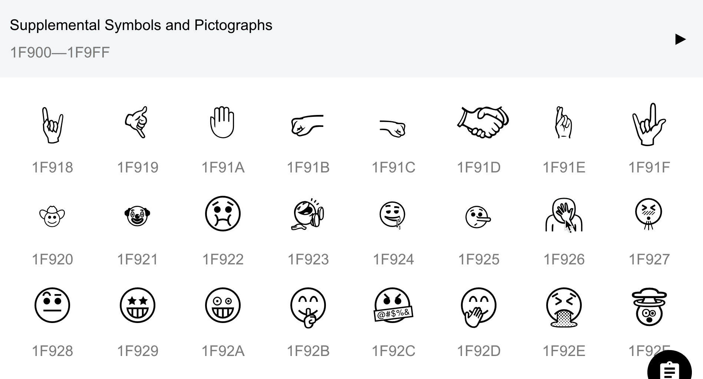

- mode
- shortcuts
- commands
- paste command result to vim
- search (in)sensitive
- search in visual mode
- sort lines
- list all
filetype - newline
\r - redirect cmd
- format json in vim
- run command in multiple buffers
- close buffer when close window
- switch in buffers
- show ascii under cursor
- open vim with specific line Number
- navigate to Nth column
- jumplist
- print path
- format html
- encryption with Vim
- config
- run vim commands in terminal
- vim regex
- vim pattern
- characters
- micro
- others
[!TIP|label:references:]
mode
diff mode
[!NOTE|label:references:]
:echo &diff
1
example
autocmd BufEnter * if &diff | let g:blamer_enabled=0 | endif " ╮ disable git blame in diff mode autocmd BufEnter * if ! empty(&key) | let g:blamer_enabled=0 | endif " ╯ and encrypt modechange cursor shape in diff mode
" setup cursor shape to block in diff mode function! CursorShapeInDiffMode() if &diff if $TERM_PROGRAM =~ "iTerm" let &t_SI = "\<Esc>]50;CursorShape=1\x7" let &t_SR = "\<Esc>]50;CursorShape=2\x7" let &t_EI = "\<Esc>]50;CursorShape=2\x7" else let &t_SI = "\e[1 q" let &t_SR = "\e[2 q" let &t_EI = "\e[2 q" endif endif endfunction autocmd BufRead,BufEnter,BufNewFile * :call CursorShapeInDiffMode()disable cursor line in diff mode
autocmd WinEnter * if &diff | set nocursorline | endif " or au OptionSet diff let &cul=!v:option_new " or augroup CursorLine au! au FilterWritePost * if &diff | let &cul=0 |endif au BufEnter * if !&diff | let &cul=1 |endif augroup end
terminal mode
[!NOTE|label:references:]
- Nvim_terminal_emulator
- Options: 'modified', 'scrollback'
- Events: TermOpen, TermEnter, TermLeave, TermClose
- Highlight groups: hl-TermCursor, hl-TermCursorNC
- autocmd-intro
- How to tell when in terminal mode?
- Why neovim's terminal is differ from vim's terminal?
- Map a key on a terminal buffer whose corresponding job is already finished
buftype
<empty>: normal bufferacwrite: buffer will always be written withBufWriteCmdshelp: help buffer (do not set this manually)nofile: buffer is not related to a file, will not be writtennowrite: buffer will not be writtenquickfix: list of errors:cwindowor locations:lwindowterminal:terminal-emulatorbufferprompt: buffer where only the last line can be edited, meant to be used by a plugin, see |prompt-buffer|
:echo &buftype
terminal
autocmd
autocmd! TermOpen,TermEnter * :IndentLinesDisable autocmd! TermOpen * setlocal nonumber norelativenumber modifiable nospell " others autocmd! BufEnter * if &buftype ==# 'terminal' | setlocal ma | endif autocmd! TermOpen,BufEnter term://* :IndentLinesDisable autocmd TermClose * echom 'Terminal exited with status '..v:event.statusmore
[!NOTE|label:more:]
" go back to insert mode when entering the terminal window autocmd BufEnter * if &buftype == 'terminal' | :startinsert | endif function! NeovimTermOpen() :split :terminal :startinsert endfunction cabbrev ter call NeovimTermOpen()-
autocmd BufWinEnter,WinEnter term://* startinsert autocmd BufLeave term://* stopinsert # or https://vi.stackexchange.com/q/25577/7389 autocmd TermOpen * startinsert au BufEnter * if &buftype == 'terminal' | :startinsert | endif # or https://vi.stackexchange.com/a/25579/7389 autocmd TerminalOpen * nnoremap <buffer> <c-p> :bdelete!<CR>
-
tnoremap <Esc> <C-\><C-n> tnoremap <expr> <C-R> '<C-\><C-N>"'.nr2char(getchar()).'pi' usage:
open
topcommand line in vsplit:vsplit term://top " or :vnew | term top-
:split | resize 10 | terminal -
autocmd VimEnter * ++nested split term://bash
shortcuts
combine multiple lines with or without space
- with space:
J - without space:
gJor:j!
Capitalize words and regions easily
| shortcut | comments |
|---|---|
gcw |
capitalize word (from cursor position to end of word) |
gcW |
capitalize WORD (from cursor position to end of WORD) |
gciw |
capitalize inner word (from start to end) |
gciW |
capitalize inner WORD (from start to end) |
gcis |
capitalize inner sentence |
gc$ |
capitalize until end of line (from cursor postition) |
gcgc |
capitalize whole line (from start to end) |
gcc |
capitalize whole line |
{Visual}gc |
capitalize highlighted text |
" vimrc
if ( &tildeop )
nmap gcw guw~l
nmap gcW guW~l
nmap gciw guiw~l
nmap gciW guiW~l
nmap gcis guis~l
nmap gc$ gu$~l
nmap gcgc guu~l
nmap gcc guu~l
vmap gc gu~l
else
nmap gcw guw~h
nmap gcW guW~h
nmap gciw guiw~h
nmap gciW guiW~h
nmap gcis guis~h
nmap gc$ gu$~h
nmap gcgc guu~h
nmap gcc guu~h
vmap gc gu~h
endif
Switching case of characters
[!NOTE|label:references:]
lowercase
gu " example Hello -> hellouppercase
gU " example Hello -> HELLOreverse
g~ " example Hello -> hELLOmore
g~3w: toggle case of the next three wordsg~$: toggle case to the end of lineg~iw: toggle case of the current word (inner word – cursor anywhere in word)g~~==g~g~: toggle case of the current line (same as V~ - cursor anywhere in the line)gUU==gUgU: to uppercase of the current line (same as V~ - cursor anywhere in the line)guu==gugu: to lowercase of the current line (same as V~ - cursor anywhere in the line)
counter
[!NOTE|label:references]
nnoremap <leader>cr 0yt=A<C-r>=<C-r>"<CR><Esc>
delete line without copy to default register
[!NOTE|label:references:]
"_dd
- or
~/.vimrcnnoremap rdd "_dd nnoremap rdw "_dw
ctrl-k delete to end of line in command mode
cnoremap <C-k> <C-\>e(strpart(getcmdline(), 0, getcmdpos() - 1))<CR>
g ctrl-g
commands
paste command result to vim
[!NOTE|label:references:]
" in cursor position"
:.! <command>
" read!
:r! <command>
" in new buffer"
:new | 0read ! <command>

search (in)sensitive
[!NOTE|label:reference:]
| CMD | ignorecase |
smartcase |
MATCHES |
|---|---|---|---|
foo |
off |
- | foo |
foo |
on |
- | foo Foo FOO |
foo |
on |
on |
foo Foo FOO |
Foo |
on |
on |
Foo |
Foo |
on |
- | foo Foo FOO |
\cfoo |
- | - | foo Foo FOO |
foo\C |
- | - | foo |
:set ignorecase
:set smartcase
/example " Case insensitive
/Example " Case sensitive
/example\C " Case sensitive
/Example\c " Case insensitive

search with \V
| pattern | result |
|---|---|
/a.k.a<CR> |
backward a.k.a |
/a\.k\.a<CR> |
backward a.k.a |
/Va.k.a<CR> |
backward a.k.a |
search in visual mode
[!NOTE]
vgo to visual mode/KEYWORDSsearch next KEYWORDS |?KEYWORDSsearch previous KEYWORDS- enter
sort lines
[!NOTE|label:references:]
sort
:{range}sort " or :sort n " reverse sort :sort nr 1.3.5.7 -- sort lines sort and unique
:{range}sort u 1.3.5.8 -- sort lines
list all filetype
:echo getcompletion('', 'filetype')
or
:echo getcompletion('c', 'filetype')or and use:
for f in GetFiletypes() | echo f | endforfunction! GetFiletypes() " Get a list of all the runtime directories by taking the value of that " option and splitting it using a comma as the separator. let rtps = split(&runtimepath, ",") " This will be the list of filetypes that the function returns let filetypes = [] " Loop through each individual item in the list of runtime paths for rtp in rtps let syntax_dir = rtp . "/syntax" " Check to see if there is a syntax directory in this runtimepath. if (isdirectory(syntax_dir)) " Loop through each vimscript file in the syntax directory for syntax_file in split(glob(syntax_dir . "/*.vim"), "\n") " Add this file to the filetypes list with its everything " except its name removed. call add(filetypes, fnamemodify(syntax_file, ":t:r")) endfor endif endfor " This removes any duplicates and returns the resulting list. " NOTE: This might not be the best way to do this, suggestions are welcome. return uniq(sort(filetypes)) endfunction
newline \r
- reference:
- Vim documentation: pattern :
\nmatches an end of line (newline)\rmatches a carriage return (more precisely it’s treated as the inputCR))
redirect cmd
[!NOTE|label:references:]
redir to file
:redir > ~/Desktop/debug.txt :silent highlight :redir END- or
:write | redir >> % | silent registers | redir END | edit
- or
to new window
:redir @a | silent digraph | redir END | new +setl\ buftype=nofile\ bufhidden=wipe | put! ato TabMessage
[!NOTE|label:references:]
function! TabMessage( cmd ) redir => message silent execute a:cmd redir END if empty( message ) echoerr "no output" else tabnew " use "new" instead of "tabnew" below if you prefer split windows instead of tabs setlocal buftype=nofile bufhidden=wipe noswapfile nobuflisted nomodified silent put=message endif endfunction command! -nargs=+ -complete=command TabMessage call TabMessage(<q-args>) " usage: :TabMessage highlight
format json in vim
[!NOTE|label:references:]
:%!jq .
" or
:%!python -m json.tool
run command in multiple buffers
related commands:
:argdo: all files in argument list:bufdo: all buffers:tabdo: all tabs:windo: all windowsreference:
:bufdo <command>
replace
# regular :%s/<str>/<str_new>/ge # for all buffers :bufdo %s/<str>/<str_new>/ge | updateforce the
bufdoto continue without saving files via:bufdo!
close buffer when close window
commands
:windo bd :%bd :silent clearautocmd
autocmd VimLeave * silent clear " :windo bd autocmd VimLeave * silent :%bd
switch in buffers
- next buffer: ctrl + ^
- previous buffer: ctrl + 6
- first:
:1b<CR> - last:
:$b<CR>
show ascii under cursor
[!NOTE|label:references:]
- keyboard
- ga
commands
:as " or :ascii " or shortcut `ga` : https://til.hashrocket.com/posts/lsqojsbmmn-get-character-without-diacritical-mark-in-vim
open vim with specific line Number
[!NOTE|label:reference]
# last line
$ vim + /path/to/file
# specific line
$ vim +123 /path/to/file
" or https://til.hashrocket.com/posts/joyovn3pau-go-to-file-with-line-number
$ vim /path/to/file:123
navigate to Nth column
N|
" i.e.: go to 15th column of current line
15|
jumplist
[!TIP|label:tips:]
:help ''- `:help ```
" check jump list
:jumps
" clear jump list
:clearjumps
" jump back https://til.hashrocket.com/posts/ue7f2hf8x2-jump-back-
''
" jump previous
``
print path
relative path: ctrl + g or
:file-
:echo @% print full path
:echo expand('%:p')
format html
:%s/></>\r</g
gg=G
encryption with Vim
set cryptmethod=blowfish2
encrypt
$ vim -x file.txt :w! # or :set key=<password> :wa!decrypt
$ vim -X file.txt " or in vim :set key= :wa!
config
get platform
[!NOTE|label:references:]
" to avoid `system('uname')` issue in powershell/gvim/cmd
" previous solution: https://stackoverflow.com/a/57015339/2940319
" let uname = substitute(system('uname'),'\n','','')
" if uname == 'Linux'
" to avoid `Can't open file /proc/version` in MacOS using:
" - `has('linux')` instead of `has('unix')`
" - `has('unix') && !has('macunix')` if `has('linux')` not supported
function! IsWSL()
if has( 'linux' )
let lines = readfile( '/proc/version' )
if lines[0] =~ 'Microsoft'
return 1
endif
endif
return 0
endfunction
function! IsWindows()
return ( has('win32') || has('win64') )
endfunction
function! IsLinux()
return has('unix') && has('linux') && !has('macunix')
endfunction
function! IsMac()
return has('macunix')
endfunction
disable vim beep
# ~/.vimrc
set noerrorbells novisualbell visualbell " ┐ turn off
set t_vb= " ┘ error/normal beep/flash
pastetoggle
[!NOTE|label:references:]
:set paste:set nopaste:set pastetoggle=<F2>details
When the 'paste' option is switched on (also when it was already on):
- mapping in Insert mode and Command-line mode is disabled
- abbreviations are disabled
- 'autoindent' is reset
- 'expandtab' is reset
- 'hkmap' is reset
- 'revins' is reset
- 'ruler' is reset
- 'showmatch' is reset
- 'smarttab' is reset
- 'softtabstop' is set to 0
- 'textwidth' is set to 0
- 'wrapmargin' is set to 0
- 'varsofttabstop' is made empty These options keep their value, but their effect is disabled:
- 'cindent'
- 'formatoptions' is used like it is empty
- 'indentexpr'
- 'lisp'
- 'smartindent'
Change up to next underscore "_" in vim
set iskeyword-=_
nnoremap <leader>e :set iskeyword-=_<cr>diw:set iskeyword+=_<cr>i
run vim commands in terminal
[!NOTE|label:manual:]
$ man vim ... OPTIONS +{command} -c {command} {command} will be executed after the first file has been read. {command} is interpreted as an Ex command. If the {command} contains spaces it must be enclosed in double quotes (this depends on the shell that is used). Example: Vim "+set si" main.c Note: You can use up to 10 "+" or "-c" commands. --cmd {command} Like using "-c", but the command is executed just before processing any vimrc file. You can use up to 10 of these commands, independently from "-c" commands.
$ vim -es -c "set ff? | q"
fileformat=unix
vim open file and go to specific function or linenumber
$ vim +commandHere filename
# or
$ vim +linenumber filename
- without fold
$ vim +linenumber filename -c 'normal zR'
using vim as a man-page viewer under unix
export PAGER="/bin/sh -c \"unset PAGER;col -b -x | \
vim -R -c 'set ft=man nomod nolist' -c 'map q :q<CR>' \
-c 'map <SPACE> <C-D>' -c 'map b <C-U>' \
-c 'nmap K :Man <C-R>=expand(\\\"<cword>\\\")<CR><CR>' -\""
additional highlight
" DrChip's additional man.vim stuff syn match manSectionHeading "^\s\+[0-9]\+\.[0-9.]*\s\+[A-Z].*$" contains=manSectionNumber syn match manSectionNumber "^\s\+[0-9]\+\.[0-9]*" contained syn region manDQString start='[^a-zA-Z"]"[^", )]'lc=1 end='"' contains=manSQString syn region manSQString start="[ \t]'[^', )]"lc=1 end="'" syn region manSQString start="^'[^', )]"lc=1 end="'" syn region manBQString start="[^a-zA-Z`]`[^`, )]"lc=1 end="[`']" syn region manBQSQString start="``[^),']" end="''" syn match manBulletZone transparent "^\s\+o\s" contains=manBullet syn case match syn keyword manBullet contained o syn match manBullet contained "\[+*]" syn match manSubSectionStart "^\*" skipwhite nextgroup=manSubSection syn match manSubSection ".*$" contained hi link manSectionNumber Number hi link manDQString String hi link manSQString String hi link manBQString String hi link manBQSQString String hi link manBullet Special hi manSubSectionStart term=NONE cterm=NONE gui=NONE ctermfg=black ctermbg=black guifg=navyblue guibg=navyblue hi manSubSection term=underline cterm=underline gui=underline ctermfg=green guifg=green
vim regex
vim pattern
reference:
overview of multi items
| pattern | magic | nomagic | matches of the preceding atom |
|---|---|---|---|
/star |
* |
\* |
0 or more (as many as possible) |
/\+ |
\+ |
\+ |
1 or more (as many as possible) |
/\= |
\= |
\= |
0 or 1 (as many as possible) |
/\? |
\? |
\? |
0 or 1 (as many as possible) |
/\{ |
\{n,m} |
\{n,m} |
n to m (as many as possible) |
\{n} |
\{n} |
n exactly | |
\{n,} |
\{n,} |
at least n (as many as possible) | |
\{,m} |
\{,m} |
0 to m (as many as possible) | |
\{} |
\{} |
0 or more (as many as possible. same as *) |
|
/\{- |
\{-n,m} |
\{-n,m} |
n to m (as few as possible) |
\{-n} |
\{-n} |
n exactly | |
\{-n,} |
\{-n,} |
at least n (as few as possible) | |
\{-,m} |
\{-,m} |
0 to m (as few as possible) | |
\{-} |
\{-} |
0 or more (as few as possible) |
overview of ordinary atoms
| pattern | magic | nomagic | matches |
|---|---|---|---|
/^ |
^ |
^ |
start-of-line (at start of pattern) /zero-width |
/\^ |
\^ |
\^ |
literal '^' |
/\_^ |
\_^ |
\_^ |
start-of-line (used anywhere) /zero-width |
/$ |
$ |
$ |
end-of-line (at end of pattern) /zero-width |
/\$ |
\$ |
\$ |
literal '$' |
/\_$ |
\_$ |
\_$ |
end-of-line (used anywhere) /zero-width |
/. |
. |
\. |
any single character (not an end-of-line) |
/\_. |
\_. |
\_. |
any single character or end-of-line |
/\< |
\< |
\< |
beginning of a word /zero-width |
/\> |
\> |
\> |
end of a word /zero-width |
/\zs |
\zs |
\zs |
anything, sets start of match |
/\ze |
\ze |
\ze |
anything, sets end of match |
/\%^ |
\%^ |
\%^ |
beginning of file /zero-width E71 |
/\%$ |
\%$ |
\%$ |
end of file /zero-width |
/\%V |
\%V |
\%V |
inside Visual area /zero-width |
/\%# |
\%# |
\%# |
cursor position /zero-width |
/\%'m |
\%'m |
\%'m |
mark m position /zero-width |
/\%l |
\%23l |
\%23l |
in line 23 /zero-width |
/\%c |
\%23c |
\%23c |
in column 23 /zero-width |
/\%v |
\%23v |
\%23v |
in virtual column 23 /zero-width |
matches the N pattern
every 3rd
\(.\{-}\zsfoo\)\{3} 1.3.5.11 -- regex every third the 3rd
^\(.\{-}\zsPATTERN\)\{3} 1.3.5.12 -- regex every third
\v: the following chars in the pattern are "very magic":
^\(.\{-}\zsPATTERN\)\{N}== >\v^(.{-}\zsPATTERN){N}^\(.\{-}\zs=\)\{N}== >\v^(.{-}\zs\=){N}
NOTICE: after using \v the = should using \= instead
characters
[!NOTE|label:references:]
- * digraph.txt:digraph-table
- * :help i_CTRL-V
- * :help i_CTRL-K
- Vim Digraphs and Ligatures
- Vi(m) tip #2: Entering greek/math symbols using vim digraphs
- Is there a way to search inside the digraphs in Vim
- youtube : Input Special / Foreign / Non-Keyboard Characters - Vim Tips (2)
- vimticks : Insert special • characters
| first | char | mode | max nr of chars | max value |
|---|---|---|---|---|
| (none) | decimal | 3 | 255 | - |
o or O |
octal | 3 | 377 | (255) |
x or X |
hexadecimal | 2 | ff | (255) |
u |
hexadecimal | 4 | ffff | (65535) |
U |
hexadecimal | 8 | 7fffffff | (2147483647) |
show all digraphs
[!NOTE|label:references:]
:redir @a | silent digraph | redir END | new +setl\ buftype=nofile\ bufhidden=wipe | put! a : or :redir @a | silent digraph | redir END | new +setl\ buftype=nofile\ bufhidden=wipe | put! a | on
insert unicode
via hex
[!NOTE|label:references:]
i.e.:
2b38: ⬸ : Leftwards Arrow with Dotted Stemsteps:
- esc : return to normal mode ( optional )
- i || o || a || ... : insert mode
- ctrl + v
- insert
u2b38oru2911: 4 digits usingu
 1.3.5.13 -- i_ctrl-v u emoji
1F92A: 🤪 : Grinning Face With One Large And One Small Eye Emoji1F926: 🤦 : Face Palm Emojisteps:
- esc : return to normal mode ( optional )
- i || o || a || ... : insert mode
- ctrl + v
- insert
U2b38orU2911: >4 digits usingU
 1.3.5.14 -- i_ctrl-v U
via digraph char
[!NOTE|label:refrences:]
i.e.:
3c ㈢ 128344c ㈣ 128355c ㈤ 12836steps:
- esc : return to normal mode ( optional )
- i || o || a || ... : insert mode
- ctrl + k
- insert
3cor4cor5c

1.3.5.15 -- i_ctrl-k
micro
[!NOTE|label:references:]
stop macro at the end of line
:let a=line('.')
<....> " do micro
:if line('.')==a | exec 'normal @q' | endif
" |
" v
" micro name
others
[!NOTE|label:references:]
startup-options
[!NOTE|label:references:]
- binary mode by
-bbinaryontextwidth0modelineoffexpandtaboff
How to Open Files with Vim
comments
[!NOTE|label:references:]
statueline
[!NOTE|label:references:]
sample
if has('statusline') set laststatus=2 set statusline=%#User2#%m%r%*\ %F\ %y,%{&fileformat} " set statusline+=\ %{FugitiveStatusline()} " set statusline+=\ %{fugitive#statusline()} set statusline+=%=\ %-{strftime(\"%H:%M\ %d/%m/%Y\")}\ %b[A],0x%B\ %c%V,%l/%L\ %1*--%n%%--%*\ %p%%\ | endif
ctags
[!NOTE|label:references:]
# Generates ctags.
# Usage: exfind folly,common cpp,h,thrift | genctags
function genctags () {
ctags --c++-kinds=+p --extras=+q -L -
}